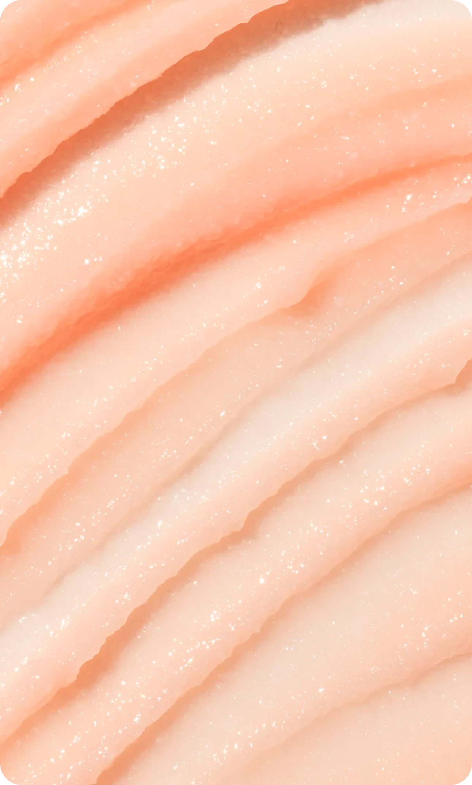
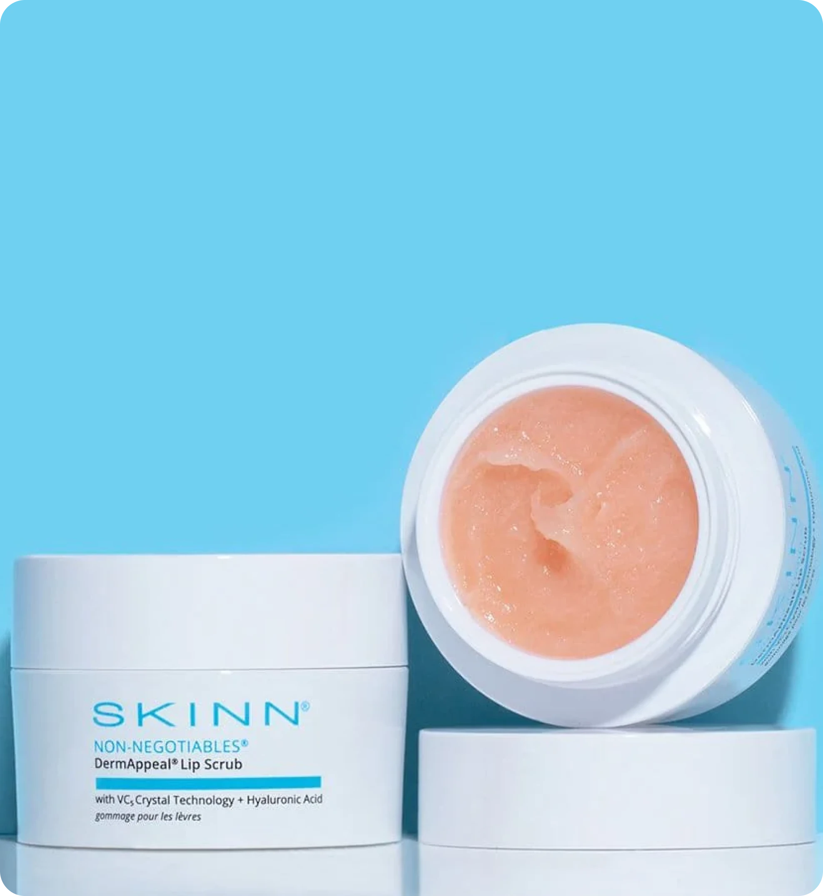

24 марта 2024
средства
Скраб для лица — дополнительное очищающее средство, которое помогает отшелушивать кожу, придавая ей здоровый и отдохнувший вид. Давайте посмотрим подробнее, что такое скраб и кому он лучше всего подойдет.
Описание
Основа скраба – мелкие абразивные частицы, которые помогают механически удалять ороговевшие клетки кожи, избавляя ее от загрязнений, себума и других накоплений. Для этой цели обычно испульзуются молотая ореховая скорлупа, фруктовые косточки, сахар, соль, кофе, гранулы жожоба, полиэтиленовые частицы, мёд, овсянка и алюминевая пудра. Чем крупнее частицы, тем жёстче скраб. Чем меньше – тем скраб деликатнее.
Действие скрабов для лица основано на мягком механическом воздействии на кожу, которое стимулирует ее обновление, улучшает кровообращение, ускоряет процесс регенерации клеток. После применения скраба кожа становится более гладкой, светлой, улучшается ее текстура и цвет лица.
 
Применение
Зачастую действию скраба подвергаются не только ороговевшие частицы кожи, но и здоровые клетки, поэтому скрабы можно использовать не всем. Обладателям тонкой, сухой, проблемной и чувствительной кожи мы бы рекомендовали заменить скрабы на мягкие оммажи, однако если вы все-таки хотите попробовать, ниже мы написали несколько рекомендаций по применению.
При нанесении скраба избегайте области вокруг глаз, поскольку кожа под глазами очень нежная и чувствительная. После нанесения скраба обязательно уделите достаточное внимание увлажнению, особенно если у вас сухая или чувствительная кожа.
Пользоваться скрабом каждый день вредно для кожи, поэтому нужно соблюдать частоту использования скрабов. Для обладателей жирной кожи — 1-2 раза в неделю, для обладателей сухой и чувствительной — 1 раз в 2 недели.
Для сухой кожи рекомендуется использовать скрабы с мягкими абразивными частицами, например, на основе сахара или овса. Оптимальная частота использования — 1 раз в 2 недели.
Для жирной кожи подойдут скрабы с более плотными абразивными частицами, например, на основе соли или гранул кофе. Оптимальная частота использования — 1-2 раза в неделю.
Для чувствительной кожи лучше выбирать скрабы с нежными абразивными частицами, например, на основе рисовой муки или мягких микрогранул. Частота использования — 1-2 раза в неделю.